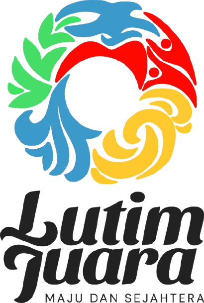
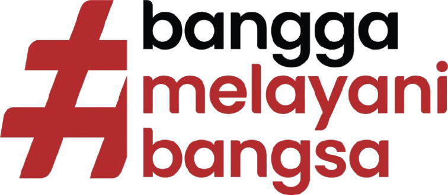
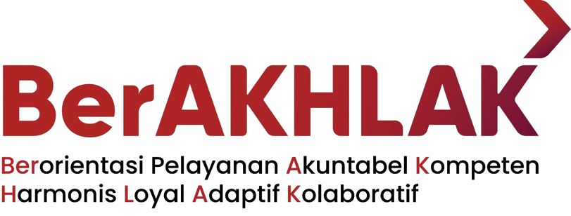
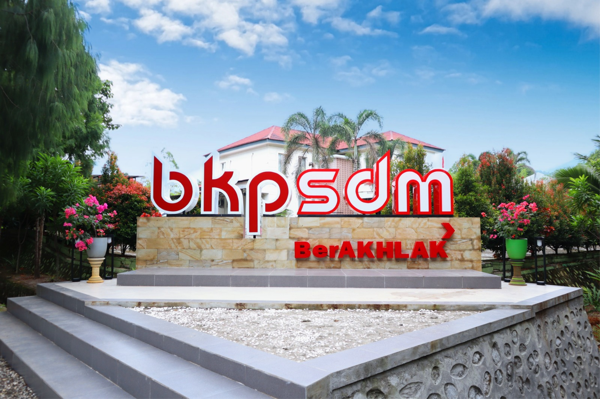

SI-MANJA BKPSDM
SI-MANJA (Sistem Manajemen Kunjungan) adalah sistem digital untuk mengatur kunjungan layanan kepegawaian BKPSDM agar lebih tertib, mengurangi penumpukan, dan membantu pemohon memperoleh kepastian waktu pelayanan.
- Booking terjadwal (tanggal & slot) sesuai layanan.
- Status layanan tercatat: Booked / Hadir / Selesai / Batal / No-show.
- Monitoring admin & PIC lebih mudah dengan filter data.
* Jam layanan & status aktif/nonaktif diatur oleh Admin/PIC sesuai kebutuhan.
SI-MANJA lahir dari ide Latsar CPNS
SI-MANJA dikembangkan sebagai bagian dari Aktualisasi Latsar CPNS untuk mendorong perbaikan layanan berbasis digital. Fokusnya: layanan lebih tertib, transparan, dan berorientasi pada kepastian waktu.
Mengubah proses layanan yang sebelumnya bergantung pada antrian/manual menjadi sistem digital yang rapi dan terjadwal, sehingga petugas dapat menyiapkan layanan lebih baik dan pemohon memperoleh kepastian waktu pelayanan.

Penggagas SI-MANJA sebagai bagian dari aktualisasi nilai ASN.
Identitas Daerah & Nilai Pelayanan
SI-MANJA hadir untuk mendukung layanan BKPSDM yang lebih tertib, transparan, dan berorientasi solusi. Nilai “Bangga Melayani Bangsa” dan “BerAKHLAK” diterjemahkan ke fitur: jadwal jelas, kuota slot, dan monitoring status.



Bukan cuma slogan—nilai ini diterjemahkan menjadi fitur: jadwal jelas, kuota slot, dan monitoring status layanan.

Foto/visual instansi (opsional). Bisa diganti sesuai kebutuhan.
Layanan
Pemohon memilih layanan, tanggal, dan slot waktu yang tersedia sesuai jadwal layanan.
Booking Online
Pilih layanan, tanggal, dan slot sesuai jadwal yang tersedia.
Cek Jadwal
Cek booking aktif menggunakan NIP untuk memastikan jadwal kunjungan.
Admin & PIC
Admin monitoring data, PIC mengatur jam layanan dan update status booking.
Alur
Ringkasan alur penggunaan untuk pemohon dan petugas.
- Buka halaman Booking
- Isi identitas & pilih layanan
- Pilih tanggal dan slot yang tersedia
- Kirim booking, simpan kode booking
- Cek ulang jadwal di Cek Booking pakai NIP
- Admin menambahkan PIC sesuai layanan
- PIC mengatur jam mulai/selesai layanan
- PIC memantau daftar booking per tanggal
- Update status booking
- Admin memonitor keseluruhan data
Ketentuan
Aturan umum agar layanan tertib dan tepat waktu.
- Datang sesuai jadwal dan tunjukkan kode booking.
- Disarankan datang 5–10 menit lebih awal.
- Booking hanya untuk hari kerja (weekend tidak tersedia).
- Jika slot penuh, pilih slot/tanggal lain yang tersedia.
- Booked = terjadwal
- Hadir = pemohon datang
- Selesai = layanan selesai diproses
- Batal = dibatalkan
- No-show = tidak hadir
FAQ
Pertanyaan yang sering ditanyakan.
Apakah layanan bisa ditutup sementara?
Bisa. Admin/PIC dapat mengubah status layanan menjadi nonaktif sehingga slot tidak muncul pada halaman booking.
Bagaimana kalau slot penuh?
Slot yang sudah terisi tidak bisa dipilih. Pemohon dapat memilih slot lain atau tanggal lain yang tersedia.
Bagaimana cara cek booking?
Buka halaman Cek Booking, masukkan NIP yang sama saat booking. Booking aktif akan tampil.
Apakah admin bisa monitoring semua booking?
Bisa. Admin dapat memfilter berdasarkan rentang tanggal, layanan, status, dan NIP.